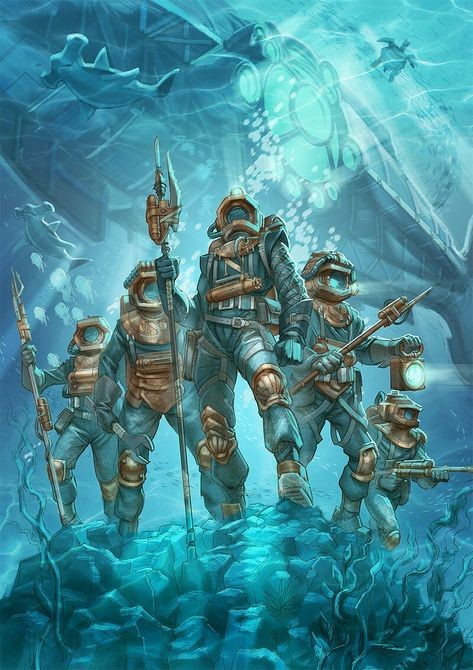

Охота на острове Креспо
«Подводный лес состоял из гигантских древовидных растений; и едва мы вступили под его мощные своды, как мое внимание было привлечено своеобразным явлением природы. Ни одна травинка не стлалась по земле, ни одна ветвь не сгибалась и не росла в горизонтальном направлении. Все устремлялось вверх, к поверхности океана. Ни единое волоконце, ни один стебелек, как бы тонки они ни были, не клонились к земле, а вытягивались в струнку, как железные прутья. Водоросли, казалось, застыли в своей неподвижности, и, чтобы пройти, приходилось раздвигать их руками; но растение тотчас же принимало прежнее положение. Тут было царство вертикальных линий!
Большинство растений пластинчатой, весьма прихотливой формы; в окраске растений преобладают тона розоватые, алые, зеленые, желтоватые, рыжие и бурые. Живые изгороди из зоофитов, желтоватые звездчатые кораллы-кариофиллеи с прозрачными щупальцами, пучки похожих на травы зоантарий, и в довершение иллюзии рыбки - ильные прыгуны порхали с ветки на ветку, точно рой колибри.»